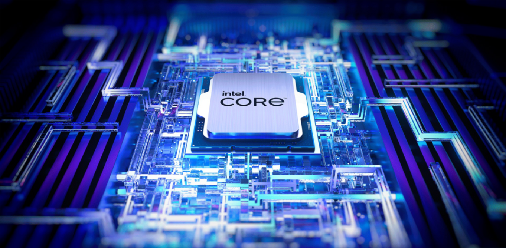
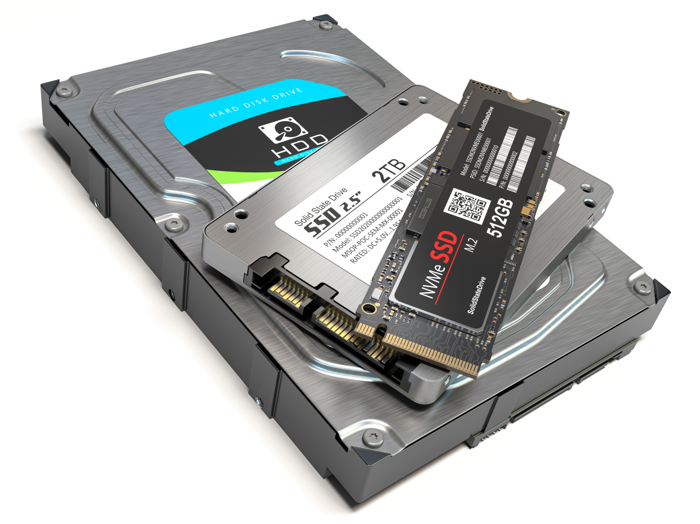
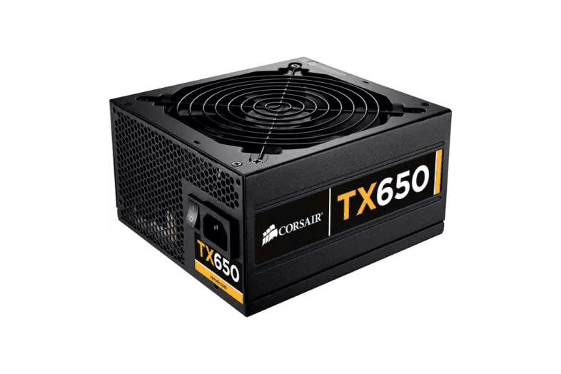
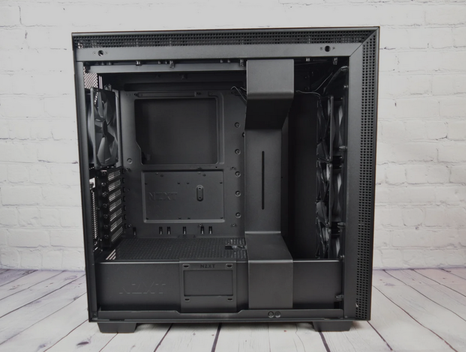

Procesorul (CPU)
Procesorul, cunoscut și sub denumirea de unitate centrală de procesare (CPU), este un component esențial al unui sistem informatic.
Placa Video (GPU)

O placă video, adaptor video sau placă grafică este un card de expansiune a cărui funcție este de a genera imagini către un monitor.
Placa de bază

Placa de bază este placa principală a unui calculator, o componentă hardware complexă pe care sunt montate toate componentele hardware ale PC-urilor sau ale altor aparate electronice computerizate.
Memoria RAM

Memoria RAM este o memorie volatilă a calculatorului pentru că datele stocate sunt pierdute în momentul opririi calculatorului.
Stocare
Discul dur (hard disk) este un dispozitiv electronic-mecanic pentru stocarea sau memorarea nevolatilă a datelor. Un solid-state drive (SSD) este un dispozitiv de stocare a datelor care folosește memorii cu semiconductori, construite pe baza studiilor de fizica stării solide.
Sursa de alimentare
Sursa de alimentare sau blocul de alimentare este o componentă vitală a calculatorului, care alimentează cu energie electrică toate celelalte componente cu cantitatea exactă de curent de care au nevoie și astfel asigură funcționarea lor.
Carcasa calculatorului
O carcasă de computer, cunoscută și sub numele de șasiu de computer, este carcasa care conține cea mai mare parte a hardware-ului unui computer personal.
Periferice

Un periferic este o unitate (aparat) de hardware ce este inclus sau se adaugă unui sistem de calcul pentru a-i extinde funcționalitatea.